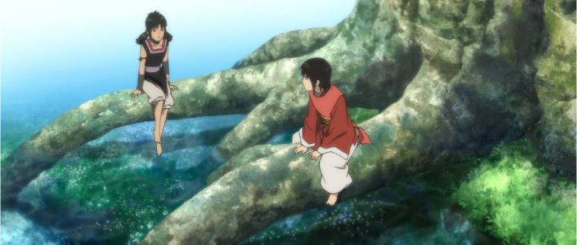

Once upon a time, an epic anime motion picture was created. It was released worldwide by Sony Pictures in North America, and despite being difficult to find unless you look for it specifically, you can find a DVD/Bluray combo pack with dubs and subtitles for every major language across the world. And the box for this release has God-ugly box art. This is "The Legend of the Millennium Dragon," an attempt to make a traditional Japanese fantasy film that could appeal to everyone, ultimately appealing to no one at all.The story is an epic tale that spans over a millennia (hence, the title is appropriate). Long ago, a war between men and monsters was waged, and the great monk of the men decided that a savior was needed. Thus, he travels to present day to find Jun, a young school boy, and whisks him back to help fight against the monstrous Yomi. As poor, confused Jun learns about this age, he learns that the Yomi may not really be monsters, and he has to make a decision as to who is right, who is wrong, and who he has to fight. This film is advertised as coming from the creators of "Naruto," and the story's quality shows this. As in, it's not good. In many ways, it is clever as an anti-bullying message, but most of it is poorly written, predictable and catered to 10-year old boys. It mimics a standard martial-arts / period film, and nothing about the story will shock or amaze you. I question why Jun was really brought into this realm is the first place: his presence isn't needed by the monk who brought him at the end. Everything ultimately ends in a large-scale fight between giant creatures. Standard action adventure. The one thing the film does have going for it is the visuals. Most of the characters actually look very bland (despite some nice facial expressions), but the backgrounds look nice. Most of all, the Yomi are drawn with a pencil-sketch style, and look and animate fantastically. The fight scenes between the monsters are equally impressive. The general scope of the film makes it perfect for large screen HD televisions. Generally, a case of high production values and varied art skills, making me question if this is one of the best or worst looking films I've seen. Dub and music are fair, appropriately epic but forgetful. That so many dubs exist on one disc is interesting in itself, and I wish more films got this treatment.  Ultimately, this is a very average movie that you can waste a couple hours on. For the animation alone, I'd say its worth it, but only seek it out if you're curious about Japanese cinema.
- "Ani" More reviews can be found at : https://2danicritic.github.io/ Previous review: review_The_Legend_of_Hei Next review: review_The_Life_of_Guskou_Budori